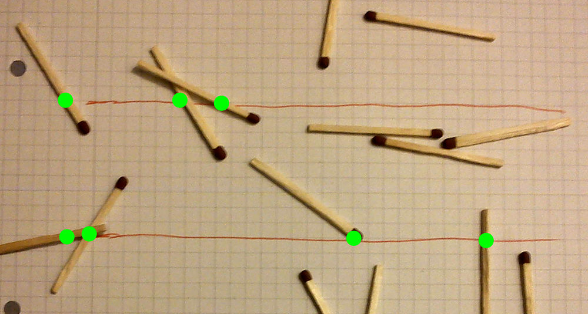
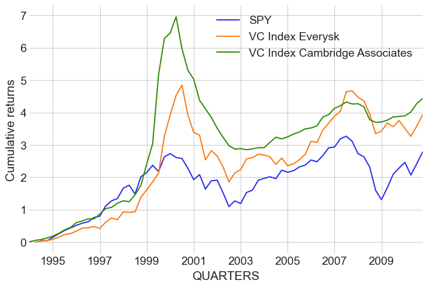

What we do
Products
Team
Clients
Workshops
Blog

Simulating data with PyMC
2023-04-20
PyMC-Marketing: A Bayesian Approach to Marketing Data Science
2023-04-06
Likelihood Approximations with Neural Networks in PyMC
2023-03-31
Likelihood Approximations for Cognitive Modeling with PyMC
2023-01-12
How to use JAX ODEs and Neural Networks in PyMC
2023-01-03
Hierarchical Bayesian Modeling of Survey Data with Post-stratification
2022-12-08
CausalPy - causal inference for quasi-experiments
2022-11-17
Bayesian Marketing Mix Models: State of the Art and their Future
2022-11-11
Solving Real-World Business Problems with Bayesian Modeling
2022-10-31
Bayesian Item Response Modeling in PyMC
2022-10-26
Modeling spatial data with Gaussian processes in PyMC
2022-08-17
Bayesian inference at scale: Running A/B tests with millions of observations
2022-08-12
Bayesian Modeling in Biotech: Using PyMC to Analyze Agricultural Data
2022-08-11
Bayesian Media Mix Models: Modelling changes in marketing effectiveness over time
2022-07-19
NBA Foul Analysis with Item Response Theory using PyMC
2022-07-15
What if? Causal inference through counterfactual reasoning in PyMC
2022-07-13
PyMC, Aesara and AePPL: The New Kids on The Block
2022-07-10
Bayesian Vector Autoregression in PyMC
2022-06-24
MCMC sampling for dummies
2022-06-15
Running PyMC in the Browser with PyScript
2022-05-16
Building Time-Series Models With Known Data Structure
2022-05-15
Stochastic Volatility Model with PyMC
2022-01-15
My Journey Building PyMC Labs: Five Principles from Open Source that Boost Innovation at any Company
2022-01-10
The Quickest Migration Guide Ever from PyMC3 to PyMC v4.0
2022-01-03
MCMC for big datasets: faster sampling with JAX and the GPU
2021-12-22
Bayes is slow? Speeding up HelloFresh's Bayesian AB tests by 60x
2021-10-22
Improving the Speed and Accuracy of Bayesian Media Mix Models
2021-09-21
Bayesian Media Mix Modeling for Marketing Optimization
2021-09-17
Estimating a Candidate's Popularity over Time with Gaussian Processes
2021-05-26

Bayesian model to infer private equity returns from capital in and outflows
2021-02-25
Introducing PyMC Labs
2021-02-18
Twitter
GitHub
LinkedIn
YouTube
Meetup
Newsletter